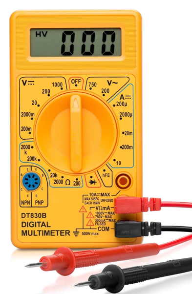
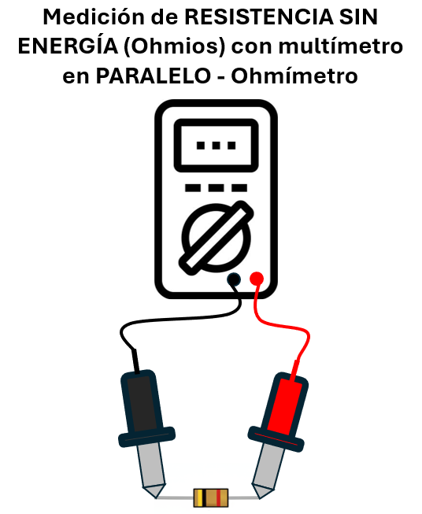
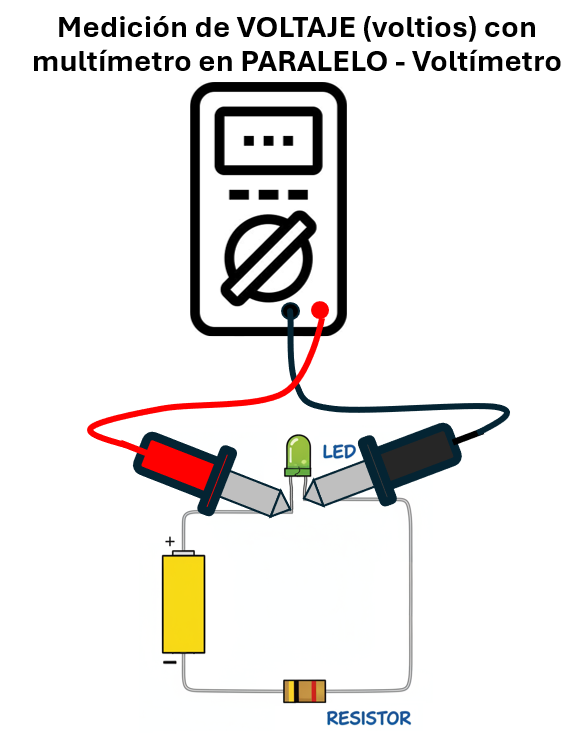
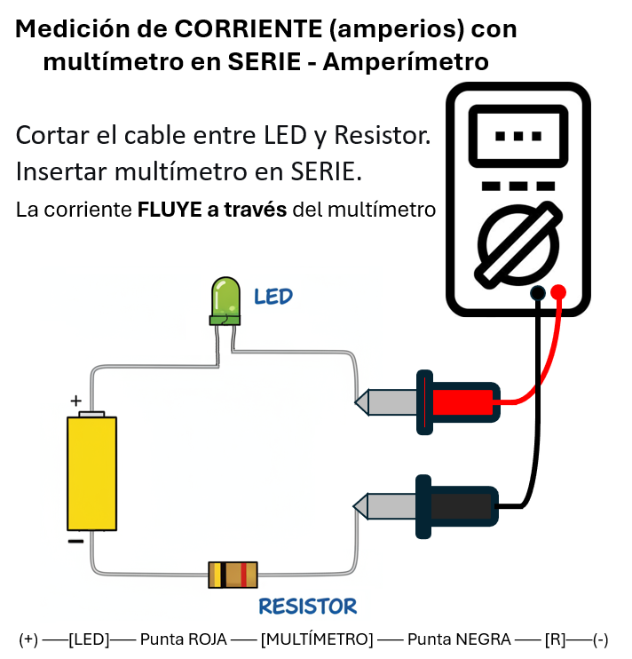
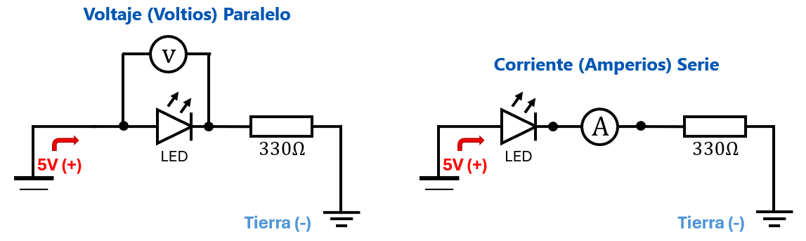

Unidad 1: Fundamentos Físicos - Lección 11 (Final)
En la lección anterior aprendiste a limpiar el ruido con resistencias. Ahora tus señales son estables. Pero... ¿Cómo estás seguro? Los electrones son invisibles. ¿Cómo sabes si tu pila tiene 3V o si está muerta? ¿Cómo sabes si esa resistencia es de 10k o de 1k si se le borraron los colores? Hoy te daremos un superpoder: la visión eléctrica usando el Multímetro.
El Multímetro (o Tester) combina tres herramientas en una: Voltímetro, Ohmiómetro y Probador de Continuidad.

Fig. 1: La Perilla selecciona qué mides. Los Puertos conectan las puntas.
Así como el LED tiene su símbolo universal (triángulo y barra), el multímetro también tiene su propio "alfabeto" que varía según el país. Esto explica por qué algunos multímetros marcan V= y otros V⎓, y por qué en esta lección usamos V= y A=:
🧠 Regla mnemotécnica:
La línea recta (⎓) simboliza corriente continua: electrones fluyendo siempre en la misma dirección, como un río.
La línea ondulada (~) representa corriente alterna: electrones yendo y viniendo como las olas del mar.
💡 ¿Por qué V= y A= en esta lección? Es una simplificación visual que encontrarás en muchos multímetros modernos. Cuando veas V⎓ o DCV en un equipo profesional, sabrás que significan exactamente lo mismo.
🎯 Para tu futura aula:
Cuando un estudiante pregunte "Profe, ¿por qué mi multímetro tiene V⎓ y el tuyo tiene V=?",
puedes responder: "Es como el español de España y el de América: las palabras cambian,
pero significan lo mismo. V⎓ y V= son dos formas de decir 'mido voltaje en corriente continua'."
Pon la perilla en el símbolo de onda/sonido. Toca las puntas entre sí. ¿Suena un piiiiii? ¡Bien!
Uso: Toca los dos extremos de un cable. Si suena, el cable está bueno. Si no suena, está roto por dentro.
Pon la perilla en 20k (o el rango de tu resistencia). Toca cada pata con una punta. ¡Importante! Para medir resistencia, el componente debe estar desconectado del circuito (sin energía) para evitar mediciones erróneas o dañar el multímetro.
Paso 1: Desconectar el circuito
Asegúrate de que la resistencia esté completamente desconectada del circuito. ¡No midas resistencia con el circuito encendido!
Paso 2: Seleccionar el rango
Gira la perilla al símbolo de Ω (ohmios). Si no conoces el valor aproximado, empieza con el rango más alto (200kΩ) y baja progresivamente.
Paso 3: Conectar las puntas
Toca cada pata de la resistencia con una punta del multímetro (no importa cuál pata con cuál punta).
⚠️ ¡REGLA DE ORO!
"Nunca midas resistencia con el circuito encendido. Si lo haces, el multímetro mostrará valores incorrectos y podrías dañar el instrumento."
¿Por qué es tan peligroso?
El multímetro en modo ohmímetro inyecta una pequeña corriente propia para medir la resistencia. Si el circuito está encendido, esta corriente se mezcla con la del circuito, causando lecturas erróneas y potencial daño al multímetro.

Fig. 3: Medición de RESISTENCIA. La resistencia debe estar desconectada del circuito (SIN ENERGÍA).
¿Por qué la resistencia debe estar suelta? Porque el multímetro mide la resistencia inyectando una pequeña corriente propia. Si el circuito está encendido, la corriente del circuito interferirá con la medición, dando resultados incorrectos. En el peor de los casos, podría dañar el multímetro.
Pon la perilla en 20V DC. Toca rojo con positivo y negro con negativo.

Fig. 2: Medición en PARALELO. El circuito puede estar encendido.
⚡ Medición de VOLTAJE (V=) - Modo Voltímetro
Posición de la perilla: Gira hasta V= (voltaje DC) y selecciona el rango 20V (para fuentes de 5V o 9V).
Conexión: En PARALELO con el componente (el circuito puede estar encendido).
¿Por qué en paralelo? Porque el voltaje es una diferencia de potencial entre dos puntos. Al medir en paralelo, comparas esos puntos sin interrumpir el flujo de corriente.
Puntas: Roja al positivo (+), Negra al negativo (-) del componente.
💡 Regla de oro: Si el multímetro muestra un valor negativo, invierte las puntas (estás midiendo al revés).
Pon la perilla en el rango adecuado para la corriente que esperas medir (200mA o 10A). ¡Importante! Para medir corriente, el multímetro debe estar en SERIE con el circuito, no en paralelo.
Paso 1: Cortar el circuito
Debes interrumpir el flujo de corriente en el punto donde quieres medir. En el ejemplo, cortamos el cable entre el LED y la resistencia.
Paso 2: Insertar el multímetro en SERIE
Conecta el multímetro en el camino del circuito (como si fuera una parte más del cable). La corriente debe FLUIR a través del multímetro.
Paso 3: Conexiones correctas
• Punta ROJA → (+) del circuito
• Punta NEGRA → (-) del circuito
⚠️ ¡REGLA DE ORO!
Si conectas el multímetro en PARALELO (como para medir voltaje), harás un CORTOCIRCUITO. ¡El fusible del multímetro se quemará y podrías dañar el circuito!

Fig. 3: Medición DE CORRIENTE. El multímetro debe estar en SERIE.
¿Por qué es diferente de medir voltaje? Al medir voltaje, el multímetro se conecta en paralelo (sin interrumpir el circuito). Al medir corriente, debes interrumpir el circuito para que toda la corriente pase a través del multímetro. ¡No hay forma de medir corriente sin abrir el circuito!
Cómo se hace: Debes abrir el circuito e insertar el multímetro en el camino (SERIE), para que los electrones pasen a través de él.
Esta medición es diferente porque cada instrumento funciona de manera opuesta. El voltímetro y el amperímetro tienen resistencias internas opuestas que determinan cómo deben conectarse:
Voltímetro (V): Tiene resistencia infinitamente alta (casi como un cable cortado). Por eso se conecta en PARALELO con el componente. Si tuvieras que medir la presión de agua en una tubería, pondrías el manómetro en paralelo (sin interrumpir el flujo).
Amperímetro (A): Tiene resistencia casi cero (como un cable pelado). Por eso debe conectarse en SERIE, interrumpiendo el circuito para que la corriente fluya a través del medidor. Si tuvieras que medir cuántos litros de agua pasan por segundo, instalarías el medidor de flujo en serie (el agua debe pasar por dentro).
⚠️ ¡REGLA DE ORO! "Voltaje en paralelo, corriente en serie. Si conectas el amperímetro en paralelo, harás un CORTOCIRCUITO y quemarás el fusible del multímetro."
¿Por qué es tan peligroso? Al conectar el amperímetro en paralelo, estás creando un camino de resistencia casi cero directamente entre positivo y negativo. ¡La corriente se desbocará por este camino, generando calor extremo y quemando componentes!

Fig. 4: Voltaje (Izquierda) es Paralelo. Corriente (Derecha) es Serie.
¿Por qué no se puede medir corriente en paralelo? Porque la corriente busca el camino de menor resistencia. Si conectas el amperímetro en paralelo, toda la corriente preferirá pasar por él (por su resistencia casi cero) en lugar del componente que querías medir. Esto causará:
Consejo para futuros docentes: Antes de que los estudiantes usen el multímetro, haz esta demostración:
Pregunta: "¿Por qué el LED se apagó cuando medimos la corriente en paralelo? ¿Qué pasó con la corriente?" Esta experiencia práctica refuerza la diferencia de manera inolvidable.
Vamos a usar el multímetro para averiguar los secretos de un LED. Importante: Haz esto con el LED suelto, desconectado de cualquier batería.
Paso 1: La Perilla (La Escala)
Gira la perilla hasta encontrar el símbolo del Diodo: una flecha pequeña chocando contra una pared ($\rightarrow|$).
Nota: En muchos multímetros, este símbolo comparte lugar con el de "Continuidad" (el de la onda de sonido 🔊). Si es así, ponlo ahí; a veces hay que apretar un botón "Select" o "Func" para cambiar entre pito y diodo.
Paso 2: Las Manos (Punta Roja vs. Negra)
Toma un LED suelto en tu mano:
Paso 3: ¿Qué pasa en la pantalla?
1.850 o 1850.
Significa "Over Limit" (Fuera de Rango). La escala es muy pequeña para lo que mides. ¡Súbela!
Usa tus cables Caimán-Pin para sujetar las puntas del multímetro a la protoboard. ¡Así tienes las manos libres!
Si mides corriente mal y suena un "¡Pof!", no murió tu multímetro; murió su fusible interno. Se cambia barato.
Usa Continuidad. Toca el principio y el final de la línea roja de tu protoboard. ¿Suena? Si no, tu riel está partido a la mitad. ¡Pon un puente!
Toma tu resistencia de 330Ω. Mídela en 2000Ω. ¿Te dio 330 exactos? Probablemente 325 o 334. ¡Es normal! (Tolerancia).
Arma el circuito (Pila + Resistencia + LED). Con el circuito ENCENDIDO y en 20V DC:
En la Lección 1 te dijimos que una pila CR2032 es como una "lata de conservas llena de energía química". Era una analogía simple para empezar. Ahora, en esta lección, abriremos esa lata y veremos qué hay realmente adentro.
🥫 Lección 1: La analogía
"Una pila es una lata de conservas llena de energía química. Al conectar un circuito, 'abres la lata' y la energía fluye."
🔬 Lección 11: La realidad
Dentro de esa "lata" hay una reacción redox: el ánodo (Zn) se oxida liberando electrones, el cátodo (MnO₂) se reduce aceptándolos. ¡Esa es la "energía química" que mencionamos!
💡 La evolución del aprendizaje:
Las analogías no son "mentiras piadosas". Son peldaños.
Primero aprendes que la pila es una "lata de conservas" (Lección 1).
Luego descubres que dentro hay una reacción química específica
que libera electrones (Lección 11).
Finalmente entenderás cómo diseñar baterías con diferentes químicas
para distintas aplicaciones (cursos avanzados).
Cada peldaño es verdadero en su nivel.
La "lata de conservas" sigue siendo válida:
¡una pila SÍ es un recipiente que almacena energía química lista para usar!
En la Lección 1 te dijimos que una pila CR2032 es como una "lata de conservas llena de energía química". Esa analogía sigue siendo válida: una pila no recargable es efectivamente un recipiente sellado con una reacción química de un solo uso. Pero ahora que entendemos su química, podemos hacer una distinción crucial:
🥫 Lata de un solo uso
Pila no recargable (CR2032, AA alcalina)
→ Reacción química irreversible
→ "Abres la lata" y la energía fluye hasta agotarse
→ No se puede recargar (intentarlo es peligroso)
🔄 Lata reutilizable
Batería recargable (Li-ion, NiMH)
→ Reacción química reversible
→ Necesita un cargador real (no solo una fuente)
→ El cargador gestiona la química durante la carga
⚠️ Confusión peligrosa:
El "cargador de celular" que usaste en lecciones anteriores
no es un cargador, es una fuente regulada de 5V.
Cuando alimentabas tus circuitos con él, usabas una fuente,
no un cargador baterías. Un cargador real gestiona la química de la batería;
una fuente solo entrega voltaje constante.
Una fuente de 5V no sabe si la batería está al 20% o al 100%. Si conectas una batería Li-ion directamente a una fuente de 5V:
🧠 Pensamiento de ingeniero:
"Las palabras precisas evitan errores peligrosos"
✨ Conexión completa: La "lata de conservas" de la Lección 1 era una analogía válida para pilas no recargables. Ahora entendemos que las baterías recargables son "latas reutilizables" que requieren un gestor químico (cargador) para rellenarlas con seguridad. Y que el dispositivo que llamamos "cargador de celular" es en realidad una fuente regulada que alimenta el cargador integrado en el teléfono.
Si una pila no recargable es una "lata de conservas de un solo uso" (una vez abierta, no se puede volver a sellar), entonces una batería recargable es como un termo reutilizable:
🌱 El viaje del aprendizaje:
"Primero simplificamos para entender. Luego complejizamos para dominar."
Ahora que eres un experto midiendo, vamos a unir Ciencia e Historia. Usaremos el ácido de un limón como electrolito para mover electrones entre dos metales.
Reto de Ingeniería: Para encender un LED (que necesita 3V), ¿cómo conectarías 4 limones? ¿Serie o Paralelo? (Solución: Serie, para sumar voltaje).
En 1936, se hallaron cerca de Bagdad vasijas de arcilla de hace 2.000 años. Tenían un tubo de cobre y una varilla de hierro adentro. Muchos historiadores creen que, usando jugo de uva o vinagre, fueron las primeras baterías de la humanidad, usadas quizás para galvanizar joyas (Arte).
Al hacer esto en tu cocina, ¡estás recreando una tecnología ancestral!
Dos docentes analizan el multímetro como "el estetoscopio del electricista" con el que podemos medir voltaje, corriente y resistencia; analizan las baterías como "latas de energía enlatada". Comparten estrategias para enseñar la diferencia entre pilas primarias y recargables, la importancia de la polaridad en circuitos digitales, y cómo evitar el error #1 al conectar fuentes de poder.
Responde estas preguntas para asegurarte de que dominas los conceptos técnicos y estás listo para enseñarlos en tu futura aula:
Explicación técnica:
Analogía del agua: Medir voltaje es como medir la presión en una tubería con un manómetro (se conecta en paralelo). Medir corriente es como contar cuántos litros pasan por segundo instalando un medidor de flujo (se conecta en serie, el agua debe pasar por dentro).
Regla de oro: "Voltaje en paralelo, corriente en serie. Si conectas mal el amperímetro en paralelo, ¡haces un cortocircuito y explota el fusible!"
Significado: "OL" significa "Over Limit" (Fuera de Rango) o "Open Loop" (Circuito Abierto). Indica que el valor que estás midiendo es mayor que el rango seleccionado en la perilla.
Qué hacer:
Para tu futura aula: Enseña a los niños que "OL" no es un error, es el multímetro diciendo: "¡Ey, esto es más grande de lo que esperaba! Ajusta mi perilla para poder medirlo bien".
Explicación técnica: El multímetro en modo ohmímetro (Ω) funciona inyectando una pequeña corriente propia a través del componente para calcular su resistencia. Si el circuito está encendido, esa corriente externa se suma a la corriente del circuito, causando:
Regla de oro: "Nunca midas resistencia con el circuito encendido. Apaga la fuente, desconecta la batería y asegúrate de que no haya voltaje antes de medir."
Analogía: "Es como intentar medir la longitud de una liga mientras alguien la está estirando. No obtendrás la longitud real y podrías lastimarte cuando se rompa."
Explicación técnica: La batería de limón demuestra el principio de la celda electroquímica:
Para encender un LED rojo de 2V:
Un LED rojo típico necesita aproximadamente 2V para encender. Como cada limón produce ~0.9V, necesitas conectar los limones en SERIE para sumar voltajes:
Conexión: Conecta el cobre de un limón al zinc del siguiente, y así sucesivamente. El zinc del primer limón va al cátodo del LED (-), y el cobre del último limón va al ánodo del LED (+) a través de una resistencia de 330Ω.
Conexión histórica (STEAM): Este mismo principio fue usado posiblemente en la "Batería de Bagdad" (2000 años atrás) para galvanizar joyas. ¡Estás recreando tecnología ancestral!
Explicación técnica:
¿Por qué no puedes recargar una pila común con un cargador de celular?
Analogía: "Una pila no recargable es como un vaso de papel con agua: una vez que te lo bebes, no puedes volver a llenarlo porque el vaso se deshace. Una batería recargable es como un termo reutilizable: puedes vaciarlo y volver a llenarlo muchas veces."
Explicación técnica (nivel estudiante): Los condensadores electrolíticos tienen una capa muy delgada de óxido en su interior que actúa como aislante. Esta capa se forma correctamente solo cuando se aplica voltaje en la polaridad correcta. Al conectarlo al revés:
Explicación segura para el aula (sin asustar):
"Imagina que el condensador es como un globo con agua. Si lo conectas bien (polaridad correcta), el agua se queda adentro tranquilamente. Si lo conectas al revés, es como si apretaras el globo: el agua intenta salir, el globo se calienta y se estira, y si sigues apretando, ¡puede reventar! Por eso siempre debemos respetar la pata larga (+) y la pata corta (-), y buscar la franja blanca que marca el negativo."
Medidas de seguridad en el aula:
Tu cuaderno es tu laboratorio pedagógico. Aquí transformas la información en conocimiento útil para tu futura práctica docente.
1. Mi primer diagnóstico con multímetro
Toma tres objetos de tu casa (un cable, una resistencia, una pila usada) y mide cada uno con tu multímetro. Anota:
2. Esquema de conexión visual
Dibuja un diagrama paso a paso de cómo conectarías el multímetro para medir:
Usa colores diferentes para las puntas roja y negra.
3. Mi reflexión docente: Enseñando a medir
Responde: Si tuvieras que explicarle a niños de grado 5° cómo usar un multímetro sin que lo dañen, ¿qué 3 reglas de oro les enseñarías? Escribe una analogía simple para cada regla (ej: "La punta roja es como el dedo índice: siempre apunta hacia lo positivo").
4. Experimento STEAM: Batería de frutas
Si tienes acceso a un limón, una moneda de cobre y un clavo:
5. Mis preguntas técnicas
Escribe al menos dos dudas que te quedaron de esta lección. Ejemplos:
💡 Recuerda: No copies textualmente. Resume con tus palabras, dibuja, conecta con tu realidad. Tu cuaderno es para ti, no para el profesor. Es donde transformas información en comprensión y preparas tus futuras clases con autenticidad.
Tienes el control físico. Entiendes la energía, sabes conectar componentes y usar las herramientas para ver lo invisible. El mundo físico está dominado.
Pero... un bombillo que prende y apaga no es "inteligente". ¿Cómo hacemos que un circuito tome decisiones? En la siguiente unidad, entraremos a la Matrix: El mundo de la Lógica Digital.